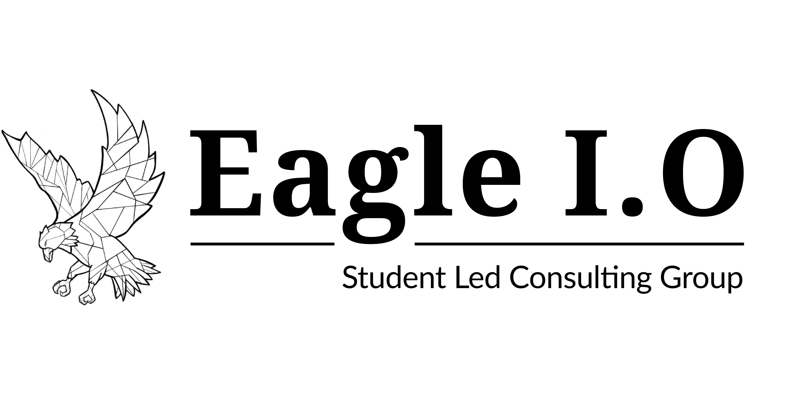

Chapter 1 Understand the Organization

1.1 Eagle I.O Introduction
Eagle I.O is a student-led consulting group within the Industrial/Organizational Psychology program at Montclair STate University, founded in 2019. They envision themselves as hard-working, driven students who wish to strengthen MSU’s I/O Psychology program, as well as learn outside of the classroom to build upon out skills and knowledge. Eagle I.O prides themselves with strong involvement in local and national I/O groups, namely METRO and SIOP. For more information about the roles and responsibilities of Eagle I.O, view Eagle I.O’s Consultant Manual.
1.2 Mission
Eagle I.O is established to provide students practical and applied learning experiences to develop skills aligned with their personal and professional goals. The group collaborates to execute a variety of I/O internal and external projects. Eagle I.O strives to prepare students to succeed after integrating into the workforce post-graduation.
1.3 What They Do
Eagle I.O responsible for executing various projects. The main project is developing an Engagement survey, which is intended to distribute to external organizations. Additionally, run a mentorship program within the MSU I/O program, where they train most of the 2nd year graduate students to guide the new students into becoming successful students themselves. Furthermore, they host a variety of events, such as new student orientation, networking opportunities, and casual hangouts.
1.4 Structure
As of Fall 2020, there are 10 consultants and two faculty advisors. The formal roles of Eagle I.O are:
1.5 Awareness of the Need to Change
Eagle I.O is a fairly new organization and is experiences swift business growth due to new projects, building relationships with external clients, and increased interests from current students in the program. The dangers in rapid growth includes problems with staff, customer dissatisfaction, diminishing profits, or job satisfaction decreases or disappears. Eagle I.O recognizes the potential dangers of increasing growth and size, and as an Industrial/Organizational Psychology group, wants to minimize these common problems occurring in their organization.
Change management drives the successful adoption and usage of change within the business. It allows employees to understand and commut to the shift and work effectively during it.